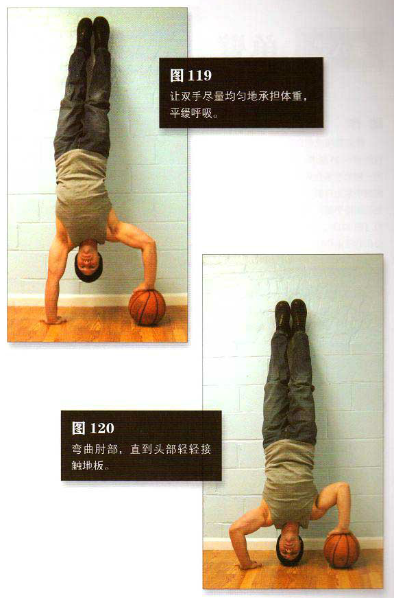

在墙边放一个篮球，用自己觉得最容易的方式在篮球旁边蹬起成靠墙倒立，然后将一只手伸出去放在篮球上。这个动作说来简单，实际做起来却非常难，这需要你在很短时间（你的手找篮球所用的时间）内用一只锁定的手臂支撑整个体重。手在篮球上放稳之后再调整球的位置，使双手间距大约与肩同宽。支撑在地上的那只手臂要伸直，另一只手臂则是弯曲的。
让双手尽量均匀地承担体重，平缓呼吸。在这时，肪三头肌、肱二头肌及肩部都需要非常卖力，否则很可能因为控制不住篮球而摔倒。这是该动作的起始姿势（图 119）。弯曲肘部，直到头部轻轻接触地板。这是该动作的结束姿势（图120）。暂停一下，然后推起身体。
初级标准：1 组，5 次
中级标准：2 组，各 8 次
高级标准：2 组，各 10 次